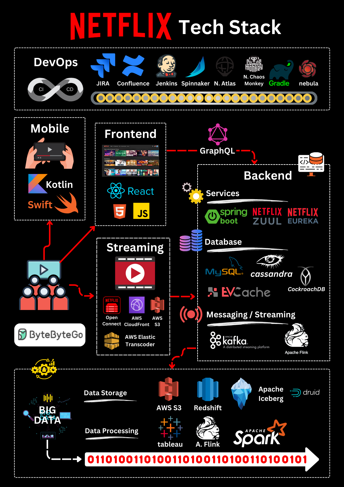
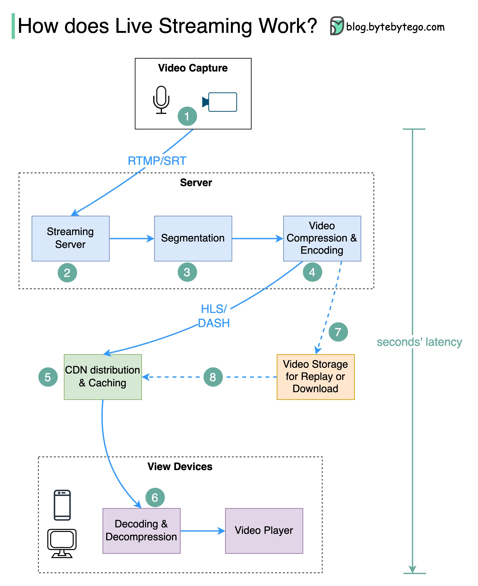

Open Connect
전용 전달망과 ISP 연동을 직접 설계합니다. 지속적인 대규모 트래픽과 운영 역량이 전제입니다.
기술이 놓인 자리, 선택이 만든 구조.
ARCHITECTURE FIELD NOTES
실제 서비스의 아키텍처를 따라가며
어떤 기술을 어디에, 왜 쓰는지 살펴봅니다.
기술의 이름에서
선택의 맥락으로.
하나의 서비스를, 하나의 흐름으로.
데이터가 흐르는 경로
각 기술이 해결하는 문제
같은 역할을 맡길 대안
얻는 것과 운영할 책임
재생 정보는 클라우드에서, 영상은 사용자 가까운 서버에서.
영상의 여정을 따라가며 각 기술의 역할과 선택 이유, 다른 선택의 비용을 읽어봅니다.
THE DESIGN DECISION
어디서 재생할지 결정하는 일과, 영상 바이트를 보내는 일을 분리합니다.
전달 경로와 기술의 역할을 함께 보면, CDN이 필요한 이유가 구조 안에서 드러납니다.
OCA는 하나의 라이브러리가 아닙니다. 저장장치, HTTP 서버, 운영체제가 함께 영상을 전달하는 전용 서버입니다.
물리 장비는 설명용 일러스트
소프트웨어 계층은 공개 설명 기준
 NGINXHTTP(S)
NGINXHTTP(S)여러 화질의 영상 파일을 보관해 시청 요청에 대비합니다.
플레이어의 요청을 받아 저장된 영상 데이터를 전달합니다.
웹 서버 아래에서 파일 읽기와 네트워크 전송의 기반을 제공합니다.
파일이 전달되는 내부 경로부터 설정 예제, 병목 지표와 대안까지. 기술 6개와 재생·서버 선택의 설계 2개를 깊게 읽습니다.
문제 → 원리 → 예제 → 선택
각 설명에 근거와 적용 범위를 표시
동일한 영상 전달 역할을 직접 운영할지, CDN 사업자에게 맡길지 비교합니다.
비교를 위한 대안 시나리오
Netflix의 전환 계획을 뜻하지 않음
전용 전달망과 ISP 연동을 직접 설계합니다. 지속적인 대규모 트래픽과 운영 역량이 전제입니다.
AWS의 관리형 CDN입니다. 서버 배치와 전달망 운영을 사업자에게 맡기고 설정과 정책을 관리합니다.
CDN과 엣지 기능을 활용하는 대안입니다. 영상 트래픽의 과금·지원 기능·지역별 전달 품질을 검토합니다.
| 판단 기준 | Open Connect 같은 자체 전달망 | 관리형 CDN | 선택 전에 확인할 질문 |
|---|---|---|---|
| 시작과 확장 | 장비, 거점, 네트워크 연동과 배치 체계를 구축합니다. | 사업자의 거점과 용량을 사용하고 정책을 설정합니다. | 출시 속도와 전달망 제어 중 무엇이 중요한가? |
| 운영 책임 | 장비 수명주기, 용량, 소프트웨어와 장애 대응을 직접 담당합니다. | 전달 인프라는 사업자가 운영합니다. 원본, 설정, 모니터링 책임은 남습니다. | 24시간 전달망을 운영할 조직과 경험이 있는가? |
| 비용 구조 | 설비·상면·전력·네트워크·인력 비용을 함께 계산합니다. | 트래픽, 지역, 요청 수와 계약 조건에 따라 과금됩니다. | 피크 트래픽과 장기 사용량을 모두 반영했는가? |
| 제어와 의존성 | 서버와 배치 정책을 세밀하게 조정할 수 있습니다. | 사업자가 제공하는 기능, 계약과 가시성 범위 안에서 제어합니다. | 꼭 직접 통제해야 하는 기능이 있는가? |
| 실제 검증 | 캐시 적중, 링크 사용량, 장애 전환과 증설을 검증합니다. | 대상 지역·ISP의 재생 시작 시간, 재버퍼링, 비용을 측정합니다. | 우리 시청자의 실제 네트워크에서 비교했는가? |
실제 공개 사례, 설명을 위한 단순화, 비교를 위한 제안을 구분합니다.
주문형 영상 전달을 설명하는 기능 단위 구성도입니다. 실제 내부 서비스 수, 물리 위치, 콘텐츠 배치의 계층과 모든 장애 대응 절차를 재현하지 않습니다. 장애 흐름은 다른 후보로 재시도하는 개념을 보여줍니다.
공식 Open Connect 사이트는 현재 환경에서 접근이 제한되어 원문 재확인이 남아 있습니다. FreeBSD·NGINX는 공개된 OCA 소프트웨어 설명을 바탕으로 표시했으며, 특정 버전이나 현재의 모든 구현을 확정하지 않습니다.
웹에서 확인한 실제 이미지를 모았습니다. 그림을 누르면 확대할 수 있습니다.
각 사례에서는 표현 방식을 참고하고, Open Connect 구성도는 이 사이트의 문법으로 새로 설계합니다.

참고할 점
기술명을 모바일·백엔드·전달 등 역할별 영역에 묶어, 어디에 쓰이는지 바로 읽게 합니다.
시안에 적용
각 노드 안에 역할과 기술 배지를 함께 두고, 배지를 누르면 설명을 연결합니다.
공개된 2023년 스냅샷입니다. 현재 넷플릭스 구성의 근거가 아닌 시각 표현 참고 자료입니다.

참고할 점
번호, 화살표, 경계로 처리 순서와 담당 영역을 연결합니다. 프로토콜은 연결선에 표시합니다.
시안에 적용
왼쪽의 재생 단계를 누르면 해당 연결선만 강조하고, 영상 경로는 굵기와 색으로 구분합니다.
라이브 방송 설명입니다. 주문형 영상인 이번 주제에는 도식의 표현 기법만 참고합니다.

참고할 점
지리적 분산을 보여줘, 사용자 가까이에 콘텐츠를 둔다는 CDN의 목적을 직관적으로 전달합니다.
시안에 적용
기본 화면은 논리 구성도로 유지하고, 후속 ‘거점 보기’ 화면에서 ISP·피어링 거점과 거리를 설명합니다.
일반적인 CDN 개념도입니다. 실제 Netflix의 거점 위치를 나타내는 자료는 아닙니다.
ByteByteGo의 역할별 기술 표시 + 단계별 도식의 읽는 순서 + CDN 지도의 거리 감각.
이를 노드 선택, 경로 강조, 대안 비교로 이어지는 인터랙티브 구성도로 만듭니다.
출처와 원본 이미지를 함께 보존한 검토용 보드입니다. 원본을 제품 콘텐츠로 복제하거나 게시하지 않았습니다.
Open Connect 공식 사이트와 ByteByteGo 본문 사이트는 현재 실행 환경에서 접근이 제한되어, 확인 가능한 GitHub 공개 자료를 사용했습니다. 참고 이미지의 기술 목록을 최신 사실로 사용하지 않습니다.